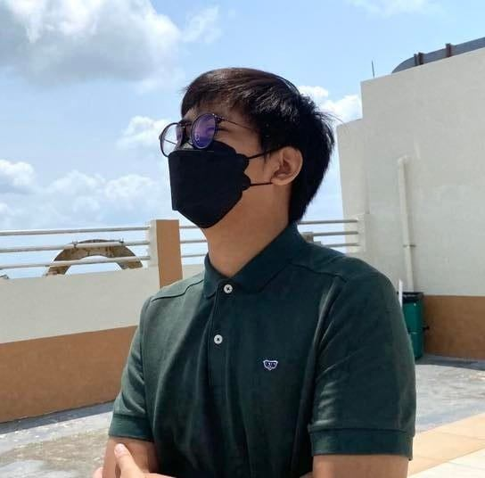

Rhodrick C. Cunanan

Summary
To use my skills and make an impact in the best possible way for achieving company's goal and also to develop my knowledge and to acquire innovative abilities that will help me in the future.
Education
- Bachelor of Science in Information Technology - University of Batangas (2016 - 2020)
Work Experience
- IT Service Engineer - San Miguel Corporation (ITMSI)
November 2022 - Present
- Resolved user's computer problems
- Install software programs and printers
- Troubleshoot computer and printer hardware issues
- IT Support Intern - Philippine Health Insurance Corporation
2019 - 2020
- Support user's regarding computer concerns
- Encoder
Skills
Technical Skills
- Computer Assembly
- Software Installation
- PC troubleshooting
- Adobe Photoshop
- Video Editing
Personal Skills
- Fast Learner
- Honesty
- Dedication
- Adaptability
- Logical thinking
Achievements
Awards
- 9th CICT Research Forum Presenter - University of Batangas (2019)
- Academic Achiever - University of Batangas (2016-2019)
- Best in VB.NET - University of Batangas (2018)
- IT Quiz Bee Competition 2nd Place - University of Batangas (2018)
- Best in C Programming - University of Batangas (2017)
Certifications
- Build a Portfolio Website in Webflow for Design Students - Filta (2021)
- Javascript HTML DOM (Create Webpages using JS) - Filta (2021)
- Computer Systems Servicing NCII - University of Batangas (2018)
- Leadership Development Assembly - The Palms Peak Resort (2018)
- Y4IT: The 15th Youth Congress on Information Technology - SMX Convention Center Manila (2017